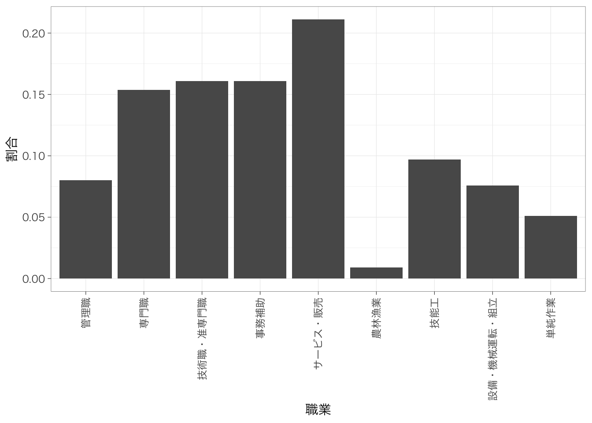

Chapter 5 回帰分析の基礎
以下の記述はすでにtidyverseパッケージを読み込んでおり、また読み込んだデータをpiaacというデータフレームに入れていることを前提とします。データフレームの名前はpiaacである必要はありません。以下のようなコードを実行していると思います。
library(tidyverse)
piaac <- read_csv("data/piaac.csv")また、Macでggplot2パッケージを使用し、グラフ中に日本語を使用する場合には、library(tidyverse)またはlibrary(ggplot2)を実行したうえで、たとえば以下のようなコードをあらかじめ実行しておく必要があります。
theme_set(theme_grey(base_family = "HiraginoSans-W3"))この資料で使用しているグラフについては以下のようにthemeを設定しています。
theme_set(theme_bw(
base_family = "HiraginoSans-W3",
base_size = 11,
base_rect_size = 0.2,
base_line_size = 0.2
))Windowsユーザの方は上記コードからbase_family =の行を除いたこちらのコードで同じような雰囲気になります：
theme_set(theme_bw(
base_size = 11,
base_rect_size = 0.2,
base_line_size = 0.2
))5.1 説明
年齢が高いほど賃金（時給換算）が高いという傾向があるかどうかを知りたいとする。このとき、年齢を横軸、賃金を縦軸とする散布図を書いてみる。
piaac %>%
ggplot(aes(x = age, y = wage)) +
geom_point(alpha = 0.2)
なんとなく、年齢が高いほど賃金が高い傾向があるようにみえる。この関係を1つの直線で要約するとしたらどのようになるだろう？この直線を示したのが次の図になる。
piaac %>%
ggplot(aes(x = age, y = wage)) +
geom_point(alpha = 0.2) +
geom_smooth(method = "lm", se = FALSE)## `geom_smooth()` using formula 'y ~ x'
このように、従属変数と独立変数の関係を\(y = f(x)\)というような関数で表現する分析方法を指して、回帰分析 regression analysis/regression model という。今回の式の場合は、次のようなかたちになる。とくに今回のような場合を線形回帰分析 Linear regressionということもある。
\[ y = \beta_0 + \beta_1x \]
今の例の場合は、\(y\)は賃金、\(x\)は年齢である。\(\beta_k\)のことを係数 coefficient といい、なかでもとくに\(\beta_0\)のことを切片 intercept、\(\beta_1\)のことを傾き slope という。傾きは、\(x\)が1単位高いときに\(y\)がどれだけ高いかを表す。
ここで関心があるのは傾きの値である。これが正であれば、\(x\)が高いほど\(y\)は高いという正の関係を表すし、負であれば、\(x\)が高いほど\(y\)は低いという負の関係を表す。絶対値が大きいほど、\(x\) 1単位の変化に対して \(y\)がより大きく変わるということを表すので、たんに正か負かというだけでなく、その値も重要。
今回の場合は係数はどうなるだろうか？線形回帰分析を推定するときのコマンドがlm()である。lm(data = xx, formula = )という書き方になる。formula =の部分は省略しても大丈夫。
lm(data = piaac, formula = wage ~ age)##
## Call:
## lm(formula = wage ~ age, data = piaac)
##
## Coefficients:
## (Intercept) age
## 1124.92 14.86(Intercept)の部分が切片\(\beta_0\)、ageの部分がageの傾き\(\beta_1\)にそれぞれ対応する。したがって、賃金と年齢の関係は以下の式のように表されるということを意味する：
\[ y = 1124.9178008 + 14.8598135x \]
では、推定された係数というのが偶然ではなく、母集団においても確かに正であるということができるだろうか。そのことを確認するための結果をみるために、いったん、名前をつけて結果を保存する。
reg_res <- lm(data = piaac, wage ~ age)名前をつけた結果は、summary()でよびだすことができる：
summary(reg_res)##
## Call:
## lm(formula = wage ~ age, data = piaac)
##
## Residuals:
## Min 1Q Median 3Q Max
## -1631.2 -807.8 -301.9 449.7 8048.3
##
## Coefficients:
## Estimate Std. Error t value Pr(>|t|)
## (Intercept) 1124.918 92.519 12.159 < 2e-16 ***
## age 14.860 2.043 7.273 4.5e-13 ***
## ---
## Signif. codes: 0 '***' 0.001 '**' 0.01 '*' 0.05 '.' 0.1 ' ' 1
##
## Residual standard error: 1195 on 2880 degrees of freedom
## (537 observations deleted due to missingness)
## Multiple R-squared: 0.01804, Adjusted R-squared: 0.0177
## F-statistic: 52.9 on 1 and 2880 DF, p-value: 4.497e-131列目のEstimateの列には、先ほどみたように係数の値が表示される。2列目のStd. Errorの列が標準誤差 standard errorを表し、係数のばらつきを示している。4列めのPr(>|t|)の列がp値 p-valueを表している。p値は「もし母集団において係数が0であるという帰無仮説が正しいとしたときに、今回のような係数の値となる確率」を表しており、この値が十分に低いのなら、帰無仮説を棄却して、たしかに母集団においても係数は0でなさそうだ（正あるいは負だ）、ということを自信をもって主張できるということになる。
ageの行をのp値を確認すると、reg_res_tidy$p.value[1]となっている。つまり、母集団において年齢の係数が0であるとしたときに、今回のような係数の値が得られる確率はとても低い、ということである。
この確率がどれくらい低ければ自信をもって「関係がある」と言えるのかということだが、慣習的には、0.05という基準が使われている。Rでは、0.05よりも小さければ（正確には0.01 ≤ p < 0.05）、p値の横に*という印がつく。同じようにして、0.01よりも小さければ（0.001 ≤ p < 0.01）**、0.001よりも小さければ（p < 0.001）、***という印がつく。
5.2 最小二乗法（OLS）（工事中）
もちろん、上記の回帰式は散布図をみて直観でえいやっと式の値を決めたのではなく、全体の傾向をもっともよく要約するような係数を推定している。その係数の推定方法を最小二乗法 ordinary least square, OLSという。
5.3 独立変数がカテゴリ変数の場合
5.3.1 2値のカテゴリ
線形回帰分析では、連続変数だけではなく、カテゴリ変数も扱うことができる。その例としてまず、性別によって賃金がどの程度異なるのかを知りたいとする。このとき、（無理やり）散布図を書くと、次のようになる。分布がわかりやすいように、バイオリン・プロットを重ねて示している。
piaac %>%
ggplot(aes(x = gender, y = wage)) +
geom_violin() +
geom_point(alpha = 0.2) 
図からわかる通り、男性と比べると女性の賃金が低いことがわかる。平均値を計算して棒グラフにしてみてみよう。
piaac %>%
group_by(gender) %>%
summarize(mean = mean(wage, na.rm = TRUE)) %>%
ggplot(aes(x = gender, y = mean)) +
geom_col() +
geom_text(aes(label = round(mean, digit = 0)), vjust = -1) +
ylim(0, 2500)
ここで得られた男性の平均値と女性の平均値をそれぞれ散布図に書き入れてみたのが次の図である。実線が男性の平均値、点線が女性の平均値を表している。
meandata <- piaac %>%
group_by(gender) %>%
summarize(mean_wage = mean(wage, na.rm = TRUE))
piaac %>%
ggplot(aes(x = gender, y = wage)) +
geom_violin() +
geom_point(alpha = 0.2) +
geom_hline(yintercept = meandata$mean_wage[1]) +
geom_hline(yintercept = meandata$mean_wage[2], lty = 2) 
いま、男性であれば1、女性であれば0をとる変数\(x\)を考えよう。このように、カテゴリ変数のカテゴリを区別するために便宜的に0/1の値を振った変数のことを、ダミー変数 dummy variableという。このとき、性別による賃金の違いを表す回帰式は次のようになる：
\[ y = \beta_0 + \beta_1x \]
回帰式のかたちは先ほどと同じとなる。傾き\(\beta_1\)は、女性（0）とくらべて男性（1）がどの程度賃金が高いのかを示している。実際、この係数を推定してみよう。
piaac <- piaac %>%
mutate(male_d = case_when(
gender == "男性" ~ 1,
gender == "女性" ~ 0
))
piaac %>%
select(gender, male_d) %>%
sample_n(size = 6) # どのような値になっているかをチェック。## # A tibble: 6 x 2
## gender male_d
## <fct> <dbl>
## 1 女性 0
## 2 女性 0
## 3 男性 1
## 4 女性 0
## 5 男性 1
## 6 男性 1reg_res <- lm(data = piaac, wage ~ male_d)
summary(reg_res)##
## Call:
## lm(formula = wage ~ male_d, data = piaac)
##
## Residuals:
## Min 1Q Median 3Q Max
## -1888.3 -610.1 -327.6 368.1 8672.4
##
## Coefficients:
## Estimate Std. Error t value Pr(>|t|)
## (Intercept) 1327.59 30.21 43.95 <2e-16 ***
## male_d 868.43 41.94 20.71 <2e-16 ***
## ---
## Signif. codes: 0 '***' 0.001 '**' 0.01 '*' 0.05 '.' 0.1 ' ' 1
##
## Residual standard error: 1125 on 2880 degrees of freedom
## (537 observations deleted due to missingness)
## Multiple R-squared: 0.1296, Adjusted R-squared: 0.1293
## F-statistic: 428.7 on 1 and 2880 DF, p-value: < 2.2e-16male_dというのが、性別が男性のときに1、女性のときに0をとる変数である。この係数は傾き\(\beta_1\)に対応し、切片（Intercept）は切片\(\beta_0\)に対応する。つまり、推定された式は次のようになる：
\[ y = 1327.5908267 + 868.4333078x \]
つまり、女性（x = 0）とくらべて男性（x = 1）の賃金は868.4333078円高いということを意味している。
この値が、2つのカテゴリ（この場合は男性・女性）、先ほど棒グラフに示した男性の平均値と女性の平均値の差に一致していることを確認しよう。傾きの値は、2つのカテゴリの平均値の差に一致する。
5.3.2 3値以上のカテゴリ
カテゴリが3値以上の場合はどうだろう？これも、基本的には同じふうに考えることができる。
piaac %>%
filter(is.na(educ) == FALSE) %>%
ggplot(aes(x = educ, y = wage)) +
geom_violin() +
geom_point(alpha = 0.2) 
中学卒を基準として、高校、短大高専、大学大学院卒だとどれくらい賃金が高いのかを推定することになる。
piaac <- piaac %>%
mutate(educ_d2 = if_else(educ == "高校", 1, 0)) %>%
mutate(educ_d3 = if_else(educ == "短大高専", 1, 0)) %>%
mutate(educ_d4 = if_else(educ == "大学大学院", 1, 0))
piaac %>%
select(educ, educ_d2, educ_d3, educ_d4) %>%
sample_n(size = 10) #それぞれどのような値となっているかチェック。## # A tibble: 10 x 4
## educ educ_d2 educ_d3 educ_d4
## <fct> <dbl> <dbl> <dbl>
## 1 短大高専 0 1 0
## 2 大学大学院 0 0 1
## 3 中学 0 0 0
## 4 大学大学院 0 0 1
## 5 短大高専 0 1 0
## 6 大学大学院 0 0 1
## 7 高校 1 0 0
## 8 大学大学院 0 0 1
## 9 高校 1 0 0
## 10 短大高専 0 1 0reg_res <- lm(data = piaac, wage ~ educ_d2 + educ_d3 + educ_d4)
summary(reg_res)##
## Call:
## lm(formula = wage ~ educ_d2 + educ_d3 + educ_d4, data = piaac)
##
## Residuals:
## Min 1Q Median 3Q Max
## -2035.1 -692.6 -316.9 390.7 8450.0
##
## Coefficients:
## Estimate Std. Error t value Pr(>|t|)
## (Intercept) 1453.13 72.82 19.954 <2e-16 ***
## educ_d2 66.61 81.20 0.820 0.412
## educ_d3 96.89 84.37 1.149 0.251
## educ_d4 889.67 82.23 10.819 <2e-16 ***
## ---
## Signif. codes: 0 '***' 0.001 '**' 0.01 '*' 0.05 '.' 0.1 ' ' 1
##
## Residual standard error: 1145 on 2878 degrees of freedom
## (537 observations deleted due to missingness)
## Multiple R-squared: 0.09976, Adjusted R-squared: 0.09882
## F-statistic: 106.3 on 3 and 2878 DF, p-value: < 2.2e-16それぞれの係数は、基準カテゴリ（今回なら中学卒）と比べて、それぞれどれくらい賃金が高いのかを表している。標準誤差やp値のみかたについてはどれも同じ。
5.3.3 変数がfactorであれば自動でカテゴリとして投入される
独立変数の型がカテゴリの場合には、Rが自動で先ほどのようなダミー変数を勝手に作って投入してくれる。
reg_res <- lm(data = piaac, wage ~ educ)
summary(reg_res)##
## Call:
## lm(formula = wage ~ educ, data = piaac)
##
## Residuals:
## Min 1Q Median 3Q Max
## -2035.1 -692.6 -316.9 390.7 8450.0
##
## Coefficients:
## Estimate Std. Error t value Pr(>|t|)
## (Intercept) 1453.13 72.82 19.954 <2e-16 ***
## educ高校 66.61 81.20 0.820 0.412
## educ短大高専 96.89 84.37 1.149 0.251
## educ大学大学院 889.67 82.23 10.819 <2e-16 ***
## ---
## Signif. codes: 0 '***' 0.001 '**' 0.01 '*' 0.05 '.' 0.1 ' ' 1
##
## Residual standard error: 1145 on 2878 degrees of freedom
## (537 observations deleted due to missingness)
## Multiple R-squared: 0.09976, Adjusted R-squared: 0.09882
## F-statistic: 106.3 on 3 and 2878 DF, p-value: < 2.2e-16ただし、基準カテゴリは一番最初（アルファベットが早い順、漢字の場合はよくわからない）のものが勝手に選ばれるので、たとえば高校を基準にしてその他を比較したい、と思ったときには、自分でカテゴリの順序を変更しておく必要がある。
piaac <- piaac %>%
mutate(educ_reorder = factor(educ,
levels = c("高校", "中学", "短大高専", "大学大学院"),
labels = c("高校", "中学", "短大高専", "大学大学院")))
reg_res <- lm(data = piaac, wage ~ educ_reorder)
summary(reg_res)##
## Call:
## lm(formula = wage ~ educ_reorder, data = piaac)
##
## Residuals:
## Min 1Q Median 3Q Max
## -2035.1 -692.6 -316.9 390.7 8450.0
##
## Coefficients:
## Estimate Std. Error t value Pr(>|t|)
## (Intercept) 1519.75 35.92 42.304 <2e-16 ***
## educ_reorder中学 -66.61 81.20 -0.820 0.412
## educ_reorder短大高専 30.28 55.72 0.543 0.587
## educ_reorder大学大学院 823.06 52.43 15.697 <2e-16 ***
## ---
## Signif. codes: 0 '***' 0.001 '**' 0.01 '*' 0.05 '.' 0.1 ' ' 1
##
## Residual standard error: 1145 on 2878 degrees of freedom
## (537 observations deleted due to missingness)
## Multiple R-squared: 0.09976, Adjusted R-squared: 0.09882
## F-statistic: 106.3 on 3 and 2878 DF, p-value: < 2.2e-165.4 従属変数が2値のカテゴリ変数（0/1）の場合
たとえば、性別によってこの1年間に職場での訓練（OJTとよぶ）を受ける率が異なっているかどうかを知りたいとする。これも今までと同じように回帰分析の枠組みで扱うことができる。
まず、OJTを受けたならば1、受けていないならば0を取る変数があるとする。この値の平均をとれば、OJTを受けた人の割合に一致する。たとえば以下の2つを比較してみよう。
piaac %>%
tbl_cross(gender, ojt, percent = "row")| Characteristic | ojt | Total | |
|---|---|---|---|
| 0 | 1 | ||
| gender | |||
| 女性 | 1,092 (69%) | 488 (31%) | 1,580 (100%) |
| 男性 | 1,150 (63%) | 689 (37%) | 1,839 (100%) |
| Total | 2,242 (66%) | 1,177 (34%) | 3,419 (100%) |
ついで、性別ごとにojtの平均値を計算し、図に書いてみる。
piaac %>%
group_by(gender) %>%
summarize(mean_ojt = mean(ojt, na.rm = TRUE)) %>%
ggplot(aes(x = gender, y = mean_ojt)) +
geom_col() +
geom_text(aes(label = round(mean_ojt, digit = 3)), vjust = -1) +
ylim(0, 0.4)
ここで示された値は、上記クロス表の「1」のほうに示されている行%、すなわち「OJTを受けた人の割合」に一致している。
では、回帰式を推定してみよう。
reg_res <- lm(data = piaac, ojt ~ gender)
summary(reg_res)##
## Call:
## lm(formula = ojt ~ gender, data = piaac)
##
## Residuals:
## Min 1Q Median 3Q Max
## -0.3747 -0.3747 -0.3089 0.6253 0.6911
##
## Coefficients:
## Estimate Std. Error t value Pr(>|t|)
## (Intercept) 0.30886 0.01193 25.894 < 2e-16 ***
## gender男性 0.06580 0.01626 4.046 5.33e-05 ***
## ---
## Signif. codes: 0 '***' 0.001 '**' 0.01 '*' 0.05 '.' 0.1 ' ' 1
##
## Residual standard error: 0.4741 on 3417 degrees of freedom
## Multiple R-squared: 0.004767, Adjusted R-squared: 0.004476
## F-statistic: 16.37 on 1 and 3417 DF, p-value: 5.332e-05「gender男性」と書かれている行が、女性と比べて男性が6.6%ポイントOJTを受ける割合が高いのかを示している）。この値が、ちょうど先ほどの棒グラフの男性と女性の割合（平均値）の差に一致していることを確認しよう。係数の見方も、標準誤差も、p値も、すべて今までの回帰分析と一緒。
もちろん、年齢などの連続変数を独立変数（X）として使うこともできる。
5.4.1 （発展）ロバスト標準誤差
上記のように従属変数が2値の場合の線形回帰分析のことを線形確率モデル linear probability modelと呼ぶことがある。線形確率モデルの場合は、誤差が正規分布するという仮定に反し、普通の標準誤差は誤った値になってしまうことが知られている。そこで、こうした不均一分散の問題に対処するために、ロバスト標準誤差を用いることが推奨されている。
ここではロバスト標準誤差のことについては説明しないし、授業でも使う必要はないが、推定の仕方だけ書いておく。estimatr::lm_robust()で、ロバスト標準誤差を得ることができる。使い方はこのページにくわしい。
install.packages("estimatr") #未インストールの場合のみ
library(estimatr)reg_res <- lm_robust(data = piaac, ojt ~ gender)
summary(reg_res)##
## Call:
## lm_robust(formula = ojt ~ gender, data = piaac)
##
## Standard error type: HC2
##
## Coefficients:
## Estimate Std. Error t value Pr(>|t|) CI Lower CI Upper DF
## (Intercept) 0.3089 0.01163 26.56 1.676e-141 0.28606 0.33166 3417
## gender男性 0.0658 0.01621 4.06 5.018e-05 0.03402 0.09758 3417
##
## Multiple R-squared: 0.004767 , Adjusted R-squared: 0.004476
## F-statistic: 16.48 on 1 and 3417 DF, p-value: 5.018e-055.5 非線形の関連
5.5.1 対数変換
piaac <- piaac %>%
mutate(logwage = log(wage))2つの変数の分布を比較してみよう。
piaac %>%
ggplot(aes(x = wage)) +
geom_histogram()## `stat_bin()` using `bins = 30`. Pick better value with `binwidth`.
piaac %>%
ggplot(aes(x = logwage)) +
geom_histogram()## `stat_bin()` using `bins = 30`. Pick better value with `binwidth`.reg_res <- lm(data = piaac, logwage ~ age)
summary(reg_res)##
## Call:
## lm(formula = logwage ~ age, data = piaac)
##
## Residuals:
## Min 1Q Median 3Q Max
## -1.59633 -0.46971 -0.03937 0.39219 1.91365
##
## Coefficients:
## Estimate Std. Error t value Pr(>|t|)
## (Intercept) 7.1331862 0.0434355 164.225 < 2e-16 ***
## age 0.0040713 0.0009592 4.245 2.26e-05 ***
## ---
## Signif. codes: 0 '***' 0.001 '**' 0.01 '*' 0.05 '.' 0.1 ' ' 1
##
## Residual standard error: 0.561 on 2880 degrees of freedom
## (537 observations deleted due to missingness)
## Multiple R-squared: 0.006217, Adjusted R-squared: 0.005872
## F-statistic: 18.02 on 1 and 2880 DF, p-value: 2.259e-05なお、対数変換した変数を新たに作成しなくても、次のように書くことで、回帰分析のコード中で対数変換を行う事ができる。以下でも同じ結果を得ることができる（結果は省略）。
lm(data = piaac, log(wage) ~ age)piaac %>%
ggplot(aes(x = age, y = logwage)) +
geom_point(alpha = 0.2) +
geom_smooth(method = "lm", se = FALSE)## `geom_smooth()` using formula 'y ~ x'
5.5.2 2乗項
piaac <- piaac %>%
mutate(age_sq = age^2)
piaac %>%
ggplot(aes(x = age, y = age_sq)) +
geom_point()
reg_res <- lm(data = piaac, logwage ~ age + age_sq)
summary(reg_res)##
## Call:
## lm(formula = logwage ~ age + age_sq, data = piaac)
##
## Residuals:
## Min 1Q Median 3Q Max
## -1.67879 -0.45201 -0.02961 0.37393 1.99303
##
## Coefficients:
## Estimate Std. Error t value Pr(>|t|)
## (Intercept) 5.687e+00 1.759e-01 32.324 <2e-16 ***
## age 7.312e-02 8.203e-03 8.913 <2e-16 ***
## age_sq -7.749e-04 9.144e-05 -8.474 <2e-16 ***
## ---
## Signif. codes: 0 '***' 0.001 '**' 0.01 '*' 0.05 '.' 0.1 ' ' 1
##
## Residual standard error: 0.5542 on 2879 degrees of freedom
## (537 observations deleted due to missingness)
## Multiple R-squared: 0.0304, Adjusted R-squared: 0.02973
## F-statistic: 45.13 on 2 and 2879 DF, p-value: < 2.2e-16このときの散布図と回帰式は次のようになる。
piaac %>%
ggplot(aes(x = age, y = logwage)) +
geom_point(alpha = 0.2) +
geom_smooth(method = "lm", formula = y ~ poly(x, 2), se = FALSE)
2乗した変数を別に作らなくても、回帰分析のコード中で2乗した変数を作成することができる。（結果は省略）
lm(data = piaac, log(wage) ~ age + I(age^2))5.6 結果をきれいに表示する
先ほどの回気分析の結果をもう少しきれいに表示したいと思うかもしれない。これまで、こうしたときにはtexregやstargazerなどといったパッケージが使われてきたが、最近はmodelsummaryというパッケージが開発され、これがなかなか良さそうという情報をキャッチしたので、使ってみよう（2021-10-27現在）。
はじめて使う場合はinstall.packages()。
install.packages("modelsummary") #未インストールの場合のみ
library(modelsummary)では、実際に使ってみよう。msummary(list(model))（modelという部分には、すでに保存しておいた回帰分析の結果を入れる）というのが最低限のコマンド。
reg_res <- lm(data = piaac, log(wage) ~ age + I(age^2))
msummary(list(reg_res)) | Model 1 | |
|---|---|
| (Intercept) | 5.687 |
| (0.176) | |
| age | 0.073 |
| (0.008) | |
| I(age^2) | −0.001 |
| (0.000) | |
| Num.Obs. | 2882 |
| R2 | 0.030 |
| R2 Adj. | 0.030 |
| AIC | 4781.8 |
| BIC | 4805.7 |
| Log.Lik. | −2386.921 |
| F | 45.131 |
よく論文でみる感じのきれいな見た目になる。とはいえ、まだたとえば変数名が何を指しているかなどは改善の余地がある。オプションを色々指定することで、よりわかりやすい表が作れる。
msummary(list(reg_res),
stars = TRUE, # 有意水準を示す印をつける
coef_rename = c("(Intercept)" = "切片",
"age" = "年齢",
"I(age^2)" = "年齢2乗"), # 各変数に名前をつける
gof_omit = "R2 Adj.|AIC|BIC|Log.Lik.|F") # 不要な統計量を削除する| Model 1 | |
|---|---|
| 切片 | 5.687*** |
| (0.176) | |
| 年齢 | 0.073*** |
| (0.008) | |
| 年齢2乗 | −0.001*** |
| (0.000) | |
| Num.Obs. | 2882 |
| R2 | 0.030 |
| + p < 0.1, * p < 0.05, ** p < 0.01, *** p < 0.001 |
いい感じの表ができた！